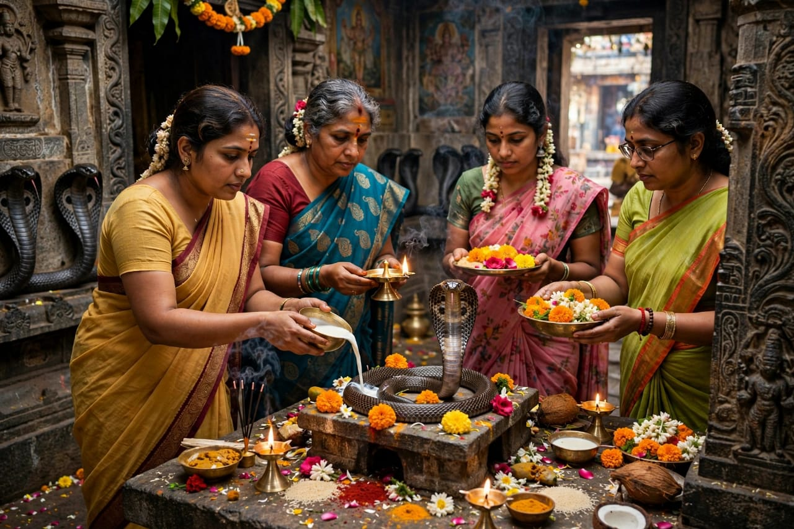
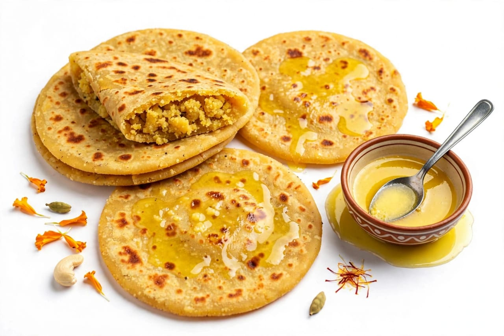

About Naga Panchami
Naga Panchami is a traditional Hindu festival dedicated to the worship of Nagas, or serpent deities. It is celebrated on the fifth day of the bright half of the Hindu month of Shravana. The festival is observed in many parts of India and is associated with traditional beliefs, prayers and rituals.
On this day, devotees offer prayers and traditional offerings as a mark of respect to the Nagas. In different regions, people visit temples and sacred places connected with serpent worship. The customs and rituals of Naga Panchami vary from one region to another.
Naga Panchami also reflects the traditional respect given to nature and animals. Families celebrate the festival with prayers and special foods. In some communities, women and children take part in cultural activities and visit temples with their families.
Special Foods

Puran Poli
A traditional sweet flatbread prepared during festivals.

Kheer
A sweet dish made with milk, rice and sugar.

Laddu
A popular Indian sweet prepared for festive occasions.